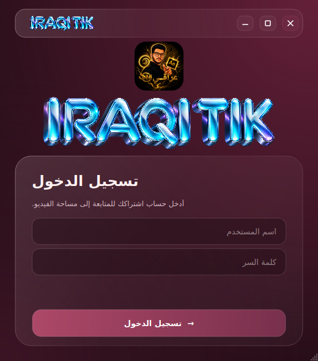

اختر الفيديو
افتح التطبيق وسجّل الدخول، ثم اختر ملفك من الكمبيوتر.
IRAQI TIK · استوديو الفيديو على Windows
من ضغط الفيديو وتحويل صيغته، إلى تجهيز ملف MP4.
أدواتك في واجهة واحدة، والقرار دائمًا بيدك.
من الفكرة إلى الملف الجاهز
افتح التطبيق وسجّل الدخول، ثم اختر ملفك من الكمبيوتر.
Converter للتحويل والضغط، أو Upload لتجهيز بنية ملف MP4.
حدّد مكان الحفظ، وابدأ المعالجة لتحصل على نسختك الجاهزة.
أداتان. تجربة واحدة.
اختر المسار المناسب لملفك.
إعدادات واضحة، وتحكم بالنتيجة.
حوّل الفيديو باستخدام H.264 أو H.265، واضبط مستويات الضغط ومعدل البت وفق احتياجك.
مسار لمعالجة بنية ملف MP4 وبياناته محليًا، دون إعادة ترميز الصورة والصوت في هذا المسار.
قسم Upload يجهّز الملف على جهازك؛ لا ينشر الفيديو تلقائيًا. تعتمد النتيجة على المصدر والإعدادات، ولا نضمن جودة النشر على منصات خارجية.
واجهة تعرف طريقك
تصميم زجاجي برغندي، وخيارات واضحة لتجهيز ملفاتك. سجّل الدخول بحسابك، واختر أداة المعالجة التي تحتاجها.
تعرّف على الاشتراك ←
اشتراكك، ببساطة.
حق استخدام التطبيق باشتراك دائم، عبر حساب باسم مستخدم وكلمة مرور. لا توجد رسوم اشتراك شهرية.
$10 – $15 USD
نطاق سعر التطبيق · دفعة واحدة
الدفع الإلكتروني قيد التجهيز حاليًا
تحميل الملف التعريفي بالتطبيق ↓ PDFوضوح قبل الشراء.
منتج رقمي، وتسليم رقمي.
بدون شحن أو حجز مواعيد.
إذا لم يناسب التطبيق احتياجك أو لم يعمل لديك، يمكنك طلب استرداد المبلغ عبر قناة التواصل التي تم الشراء من خلالها. يُطلب مرجع الدفع للتحقق من عملية الشراء، ثم يُعاد المبلغ بالتنسيق مع وسيلة الدفع المستخدمة.
بعد تأكيد الدفع، يُفعّل حسابك للدخول إلى التطبيق باسم مستخدم وكلمة مرور. التسليم رقمي، ولا توجد شحنة مادية.
لا. الاشتراك دائم بدفعة واحدة، ويتراوح سعر التطبيق بين 10 و15 دولارًا أمريكيًا. يُوضّح السعر النهائي قبل الدفع.
نعم، للتحقق من الحساب والاشتراك وحالة التطبيق والتحديثات. معالجة الفيديو نفسها تتم على جهازك.
الدفع الإلكتروني لم يُفعّل بعد، ولا يجمع هذا الموقع بيانات البطاقات أو مبالغ مالية حاليًا. ستُضاف وسيلة التواصل الرسمية ورابط الدفع عند تجهيز خدمة الشراء.
هذه الصفحة لا تتضمن نموذجًا لجمع بياناتك الشخصية أو ملفات الفيديو، ولا تجمع بيانات الدفع. تنزيل الملف التعريفي لا يتطلب إنشاء حساب. قد تسجل منصة الاستضافة بيانات اتصال تقنية لتشغيل الموقع.
جاهز تتعرف أكثر؟